La unión P-N, la base del diodo
Sesiones 4–5
Al unir un semiconductor tipo N con uno tipo P formamos un componente denominado diodo, que tiene un comportamiento muy particular.
Al unirlos se produce una atracción entre los electrones del lado N y los huecos del lado P. Los electrones se desplazan hasta ocupar los huecos que tienen cerca y se crea una zona en el centro donde no hay ni electrones ni huecos, por lo que el material no permite el paso de corriente eléctrica. Se ha creado una barrera de potencial (zona Z) que impide la conducción a través de la unión.
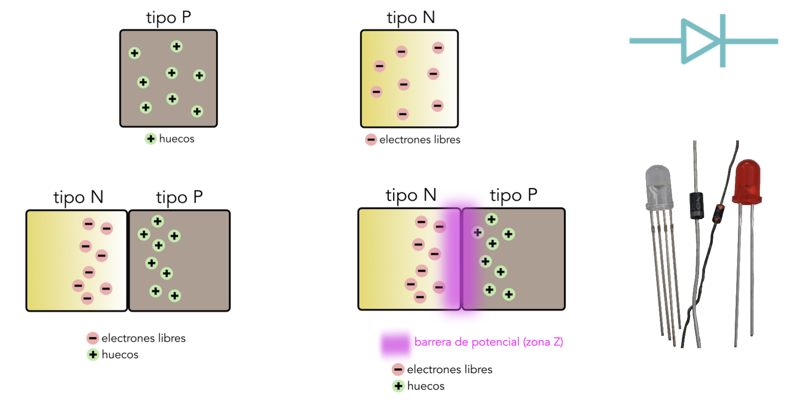
La barrera de potencial se elimina o se aumenta en función de la polarización de la alimentación eléctrica, permitiendo o no el paso de la corriente. Según esto podemos hablar de dos tipos de conexiones:
Polarización directa
|
Al conectar el polo negativo (cátodo) del generador con la parte N del semiconductor y el polo positivo (ánodo) con la parte P se produce la desaparición de la barrera de potencial y la corriente puede circular. Los electrones se ven atraídos por el positivo de la fuente, por lo que abandonan los huecos, que irán llenándose con otros electrones que "huyen" del negativo de la fuente. Se puede mantener este flujo de electrones a través de la unión, por lo que se establece una corriente eléctrica. En la figura se ha mostrado el sentido del movimiento real de los electrones en verde y el sentido convencional de la corriente (el que usamos siempre) en rojo. La unión P-N se comporta como si tuviéramos un circuito cerrado (aunque presenta una ligera caída de tensión), por lo que la lámpara se enciende. |
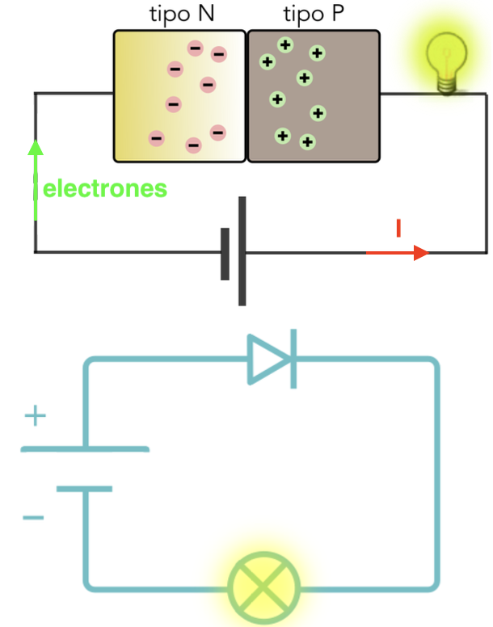 |
Polarización inversa
|
Al conectar el polo negativo (cátodo) de la pila con la parte P del semiconductor y el polo positivo (ánodo) con la parte N aumenta la barrera de potencial. Ahora, los electrones se ven atraídos por el positivo de la fuente hacia la izquierda, alejándose aún más de la unión, mientras que los huecos se verían atraídos hacia el polo negativo (derecha), alejándose también. La unión se hace aún más aislante, por lo que se comporta como un circuito abierto y la corriente no puede circular. La lámpara permanecerá apagada. |
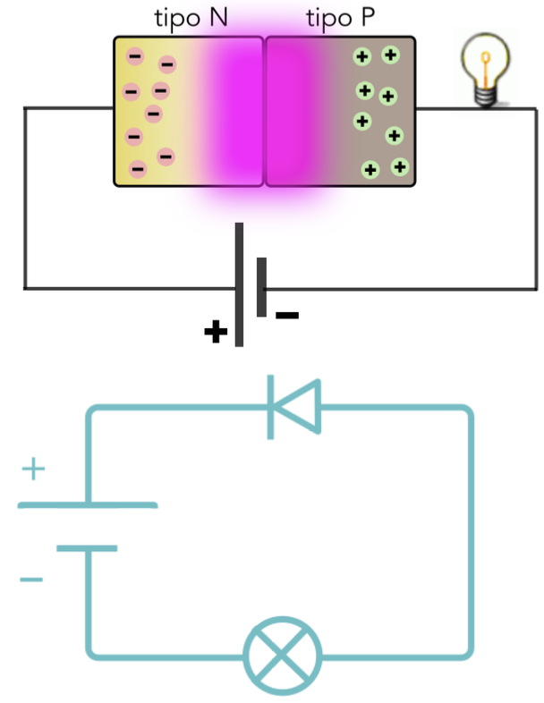 |
Resumiendo, un diodo es un componente electrónico que, en polarización directa se comporta como un interruptor cerrado permitiendo el paso de la corriente mientras que en polarización inversa se comporta como un interruptor abierto o como un material aislante.
Para tener un imagen más clara y completa de lo que realmente sucede en la unión P-N y como funciona el diodo, puedes ver este vídeo donde, además, se adelanta algún ejemplo de uso y se muestra cómo utilizar el polímetro para comprobar un diodo:
Diodos rectificadores
Ya hemos visto que el diodo es un dispositivo electrónico que solo deja pasar corriente en un sentido y no la deja pasar en sentido contrario. Esto permite que se utilicen para rectificar la corriente eléctrica, es decir, transformar corriente alterna (CA) en corriente continua (CC). Esta es la utilidad primordial de los diodos.
Los diodos discretos son físicamente componentes cilíndricos. Suelen ser negros y tienen un extremo de color plateado:
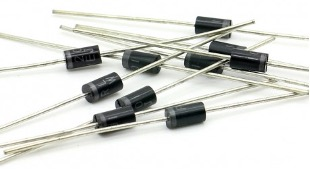
Los terminales del diodo se llaman ánodo y cátodo y hay que conectarlos correctamente a la alimentación para que el diodo deje pasar la corriente a través suyo. Según lo conectemos, tendremos las dos posibilidades:
- Polarización directa: positivo en el ánodo y negativo en el cátodo. El diodo deja pasar la corriente eléctrica.
- Polarización inversa: positivo en el cátodo y negativo en el ánodo. El diodo interrumpe el paso de la corriente eléctrica.
Para poder saber cuál es el ánodo y cuál el cátodo (imprescindible para que funcione como queremos) está el extremo plateado del diodo: su extremo plateado marca siempre el lado del cátodo.
Su símbolo para circuitos eléctricos es el siguiente:
Si la corriente va en el sentido de la “flecha” del símbolo, el diodo la dejará pasar. Si intenta ir en contra, no habrá ninguna corriente porque el diodo se comportará como un interruptor abierto. En resumen:
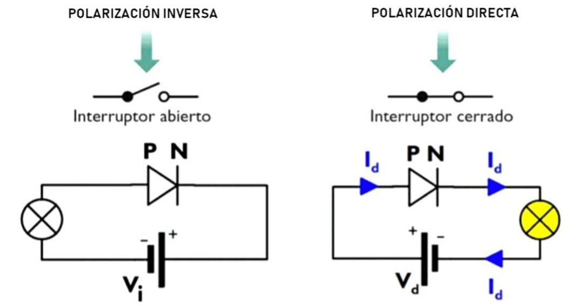
RECTIFICADOR DE MEDIA ONDA
Una corriente alterna (CA) es aquella que cambia constantemente de sentido y además normalmente tiene forma de onda senoidal:
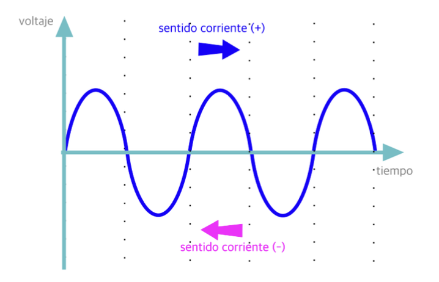
Por otro lado, la corriente continua (CC) es aquella que siempre va en el mismo sentido y además el voltaje suele ser constante, aunque no tiene por que ser siempre así. Existen algunos tipos de corriente continua en los que el voltaje puede incluso anularse en ciertos momentos: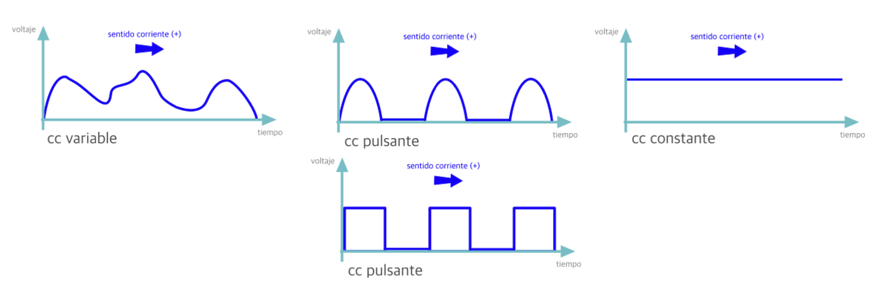
Mira lo que ocurre cuando colocamos un diodo a la salida de una fuente de tensión alterna:
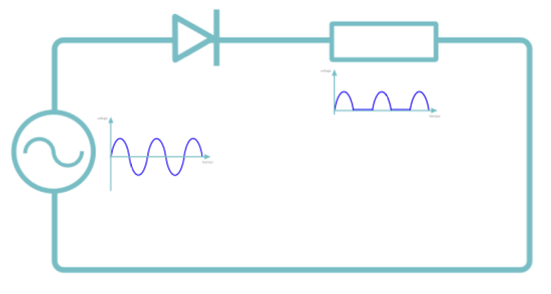
Cuando la corriente alterna pasa por el diodo sólo lo puede hacer cuando es positiva, mientras que cuando es negativa y viene en sentido contrario no puede pasar, de manera que a la resistencia solo le llega corriente en un solo sentido, por lo tanto la corriente es continua. En este caso es una corriente que va a intervalos, lo que se denomina corriente continua pulsante. Por lo tanto, un circuito rectificador de media onda es, en su forma más simple, un único diodo.
La corriente continua pulsante es poco útil, ya que va a pulsos, y no serviría ni para cargar el móvil ni para otros muchos usos que le damos a la corriente continua. Para mejorar la señal de salida es necesario añadir al circuito un condensador en paralelo con la resistencia, de manera que cuando la corriente pase por el diodo y llegue a la resistencia el condensador también se cargue. Así cuando la corriente sea negativa y no pueda pasar por el diodo el condensador se descargará y mantendrá el flujo de corriente, que no será 0 amperios en ningún momento.
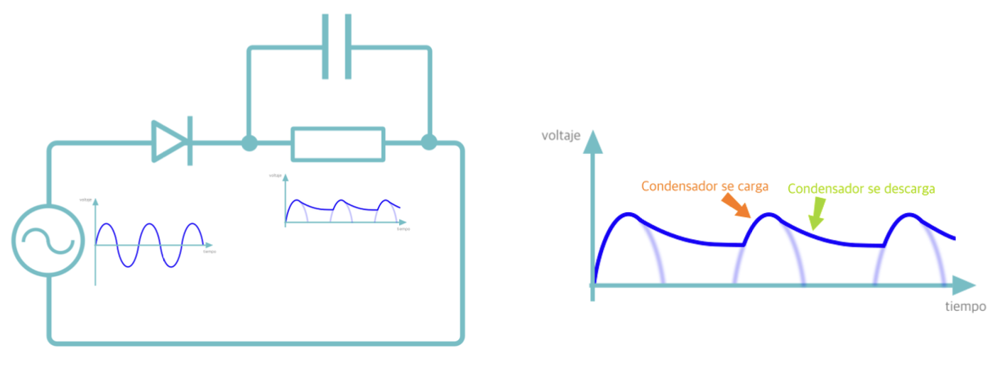
Te dejo el circuito del rectificador de media onda simulado, con un interruptor con el que puedes conectar o desconectar el condensador y ver cómo afecta a la tensión de salida (Vsalida):
RECTIFICADOR DE ONDA COMPLETA
El rectificador de media onda es un circuito muy simple y que sirve para muchas aplicaciones. Sin embargo, en ocasiones necesitamos que la tensión rectificada no tenga tanto "rizado", sino que sea lo más constante posible. Para estos casos podemos utilizar un circuito algo más completo que es el rectificador de onda completa. En este caso necesitamos cuatro diodos, que se conectan en una configuración que se denomina puente de diodos y que tiene esta forma:
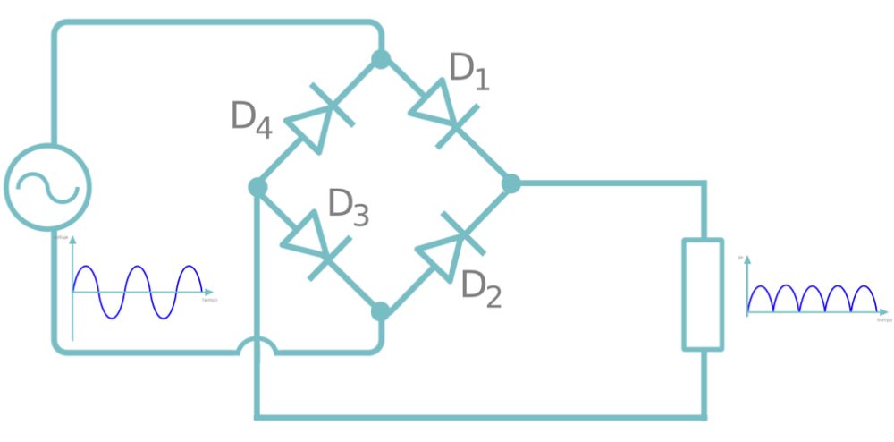
El circuito funciona de la siguiente manera:
- Semionda positiva: la corriente circula por D1, atraviesa la carga de arriba a abajo y vuelve a la fuente por el diodo D3.
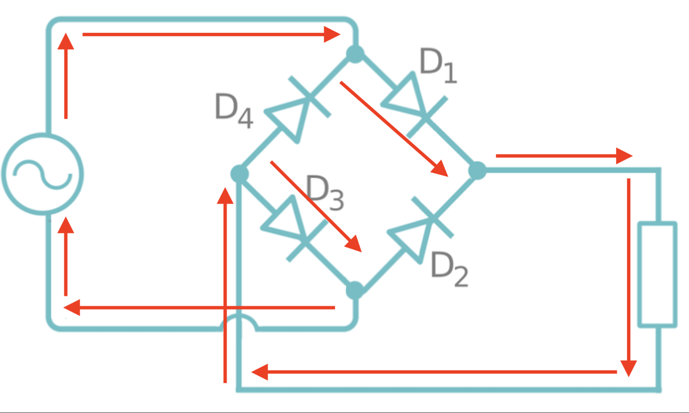
- Semionda negativa: la corriente circula por D2, atraviesa la carga de arriba a abajo y vuelve a la fuente por el diodo D4.
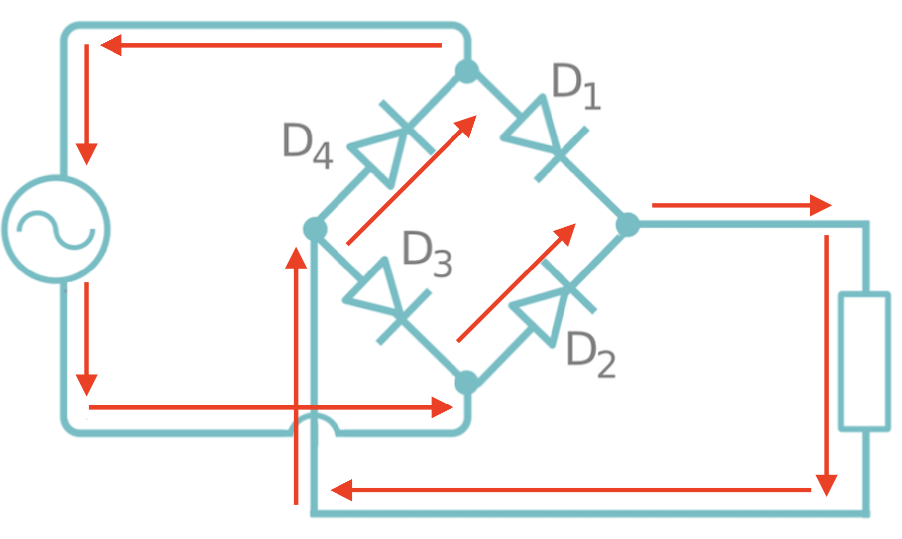
Así, tanto en la semionda positiva como en la negativa llega tensión a la carga y, en ambas semiondas, el sentido de la corriente es el mismo (de arriba a abajo), por lo que la corriente es continua.
De nuevo, podemos mejorar mucho el rizado de la tensión añadiendo un condensador en paralelo con la carga:
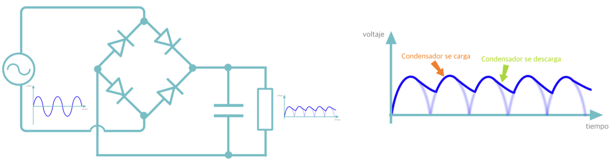
Como en el caso del rectificador de media onda, te dejo una simulación del circuito rectificador de onda completa para que puedas experimentar a poner o quitar el condensador (con el interruptor) o a cambiar la capacidad del condensador para ver cómo varía el rizado de la tensión de salida (Vsalida):
Fíjate que la tensión de salida es aproximadamente de 3,8 V, mientras que la fuente es de 5 V. Hay que tener en cuenta que la corriente siempre está pasando por dos diodos en serie, por lo que se suman las caidas de tensión que presentan ambos diodos al conducir y supone más de un voltio. Esto hay que tenerlo en cuenta al diseñar una fuente de alimentación y lo comprobaréis al hacer la tarea de esta sección.
Como resumen, en este vídeo tienes explicados los circuitos rectificadores con animaciones muy didácticas:
Diodos emisores de luz (LED)
Son un tipo especial de diodo que, cuando permite el paso de la corriente, emite una luz de un color determinado.
Los LEDs que usaremos nosotros tendrán este aspecto:
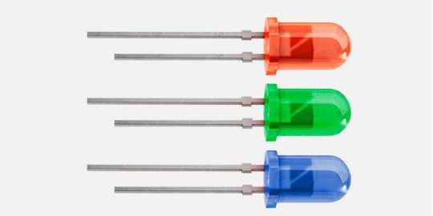
Para que un diodo LED funcione y se encienda, tenemos que alimentarlo con el voltaje positivo en el ánodo y el negativo en el cátodo. Si lo hacemos al revés, no conducirá la corriente y permanecerá apagado.
Para poder saber cuál es el ánodo y cuál es el cátodo, tenemos dos “pistas”.
- La pata del cátodo se distingue porque en ese lado la cápsula del LED tiene una parte plana.
- Si las patas son de distinto tamaño, la más larga es el ánodo y la más corta el cátodo.
 En el caso del simulador de TinkerCAD puedes distinguir el ánodo porque es la pata que está un poco “doblada”. Además, si tienes dudas, al poner el ratón sobre una de las dos patas te aparecerá un cartelito que te dirá si es el ánodo o el cátodo.
En el caso del simulador de TinkerCAD puedes distinguir el ánodo porque es la pata que está un poco “doblada”. Además, si tienes dudas, al poner el ratón sobre una de las dos patas te aparecerá un cartelito que te dirá si es el ánodo o el cátodo.
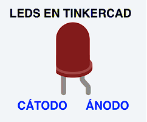
El símbolo eléctrico del LED es como el del diodo convencional, pero con un par de flechas que representan la luz que emite este diodo:
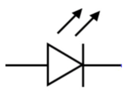
Como ya vimos antes, siempre que usemos un LED con Arduino tendremos que conectarle una resistencia en serie de unos 220 ohmios. Si no hacemos esto, el LED se destruirá y ya no nos servirá.LED RGB
Hay un tipo de LED que combina interiormente tres LEDs de diferentes colores: rojo, verde y azul. Exteriormente tiene cuatro terminales: un terminal que sirve de cátodo común (y que habrá que conectar al negativo de la fuente de alimentación o a tierra) y otros tres terminales que sirven de ánodos para cada uno de los tres LEDs (rojo, verde y azul). Su aspecto es este:
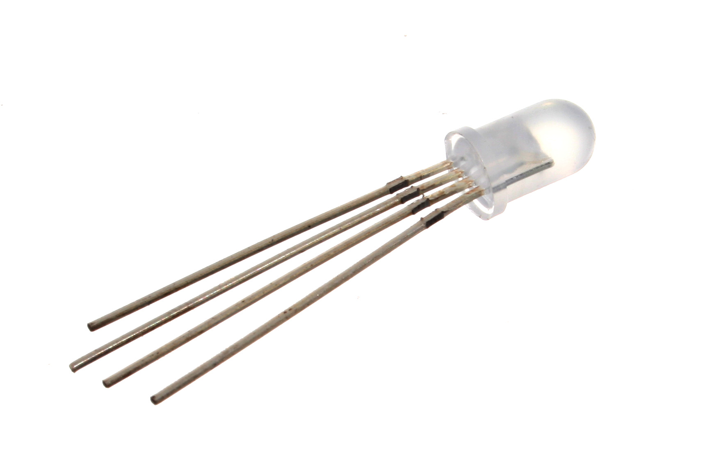
En este tipo de LEDs, el terminal más largo es el cátodo. En el caso de TinkerCAD, el LED RGB lo puedes encontrar entre los componentes básicos y puedes ver a qué color pertenece cada terminal pasando por encima el puntero del ratón. De todas formas, te enseño aquí cuál es cada uno:
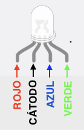
Si se iluminan los tres colores a la vez, se obtiene una luz blanca. Si se iluminan con diferentes intensidades los tres, podremos obtener muchísimos otros colores como mezcla de los tres primarios.
Diodos Zener
El Zener consiste en una unión PN especial, muy dopada, diseñada para conducir en la dirección inversa (diodo polarizado inversamente) cuando se alcanza un determinado voltaje especificado, llamado voltaje o tensión Zener.
Una vez alcanzada la tensión Zener, el diodo es capaz de conducir una corriente importante en dirección inversa (de cátodo a ánodo) mientras que la tensión en los terminales del Zener no varía, permanece prácticamente constante aunque aumente la tensión de alimentación. Por esto, el diodo Zener es un componente esencial de los reguladores de tensión, manteniendo la tensión casi constante con independencia de que se presenten grandes variaciones de la tensión de red, de la resistencia de carga o de la temperatura.
En esta imagen puedes ver el aspecto de un diodo Zener:
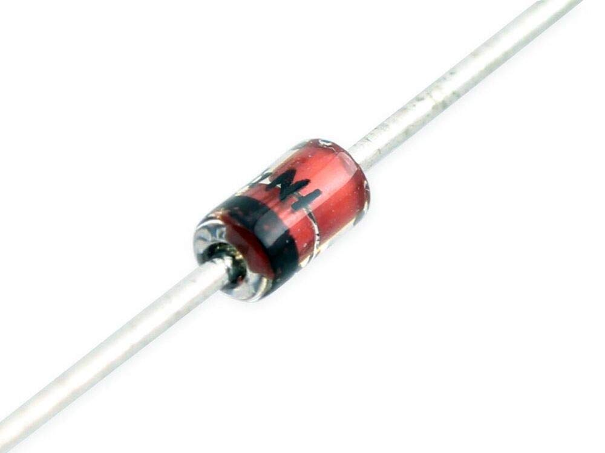
Si un diodo Zener se polariza directamente, toma las características de un diodo rectificador básico (la mayoría de casos), pero si se polariza inversamente, el diodo mantendrá una tensión constante. No actúa como rectificador sino como un estabilizador de tensión. Variando la tensión V a valores mayores que la tensión de ruptura del Zener, Vz se mantiene constante.
Aquí puedes ver la curva característica de tensión-intensidad para un diodo Zener:
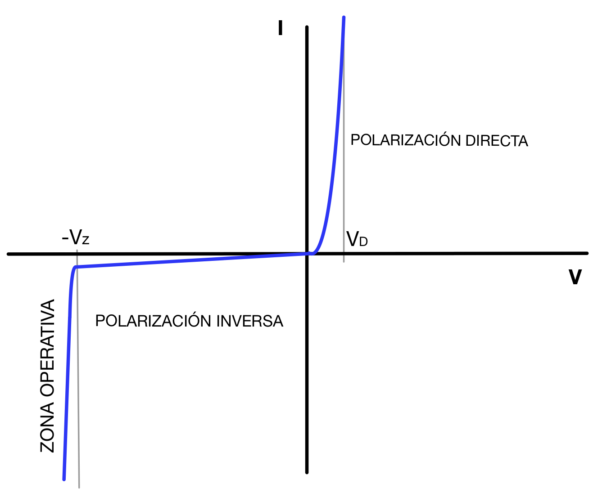
Analizando la curva V-I del diodo se ve que conforme se va aumentando negativamente el voltaje aplicado al diodo, la corriente que pasa por él aumenta muy poco, pero una vez se llega a un determinado voltaje (tensión Zener, Vz), el aumento del voltaje (siempre negativamente) es muy pequeño, pudiendo considerarse constante. Para este voltaje, la corriente que atraviesa el diodo, puede variar en un gran rango de valores. A esta región se le llama la zona operativa y es la característica del diodo Zener que se aprovecha para que funcione como regulador de voltaje, pues el voltaje se mantiene prácticamente constante para una gran variación de corriente.
Fíjate que la tensión Zener (de varios voltios) es muy superior a la tensión que aparece cuando se polariza de forma directa (VD, que suele rondar los 0,7 voltios).
El símbolo eléctrico del diodo Zener es parecido al de un diodo normal pero tiene dos trazos a los lados que simbolizan la forma de su curva característica:
APLICACIONES DEL DIODO ZENER
Una de las aplicaciones más usadas del diodo Zener es como referencia de voltaje, y como tal se usa en muchos circuitos. Otras aplicaciones son:
Regulador de voltaje
Un regulador de voltaje con diodo Zener ideal mantiene un voltaje predeterminado fijo a su salida, sin importar las variaciones de voltaje en la fuente de alimentación y/o las variaciones de corriente en la carga. Recuerda que las fuentes reales tienen una resistencia interna, por lo que el voltaje disponible puede disminuir si aumenta la corriente en la carga y viceversa. Esas fluctuaciones las podría controlar un Zener.
En este circuito de ejemplo, la fuente de alimentación va fluctuando su valor (Vfuente) constantemente entre 5,7 y 7,7 voltios, pero la tensión del Zener (Vzener) se mantiene prácticamente constante al estar polarizado en inversa, por lo que mantiene prácticamente constante la tensión que ve la carga de salida (Vsalida).
Recortador de tensión (clipper)
En este caso dos diodos Zener se colocan contrapuestos conectados por los ánodos y nos recortará la onda de la fuente de tensión de entrada:
En este circuito de ejemplo, la Vfuente oscila entre -10 y +10 voltios, mientras que las tensiones Zener son de alrededor de 5,5 voltios. El circuito recortará la salida a un voltaje máximo establecido por el voltaje Vz del diodo Zener que esté en inversa más 0.7 voltios aproximadamente del diodo Zener en directa. Por eso la tensión de salida se recorta a aproximadamente ± 6,2 voltios.
Desplazador de voltaje
Este circuito reduce el voltaje que se pone en su entrada en la cantidad de voltios que tiene el zener. Si el voltaje de entrada es de 12 voltios y el voltaje del Zener es de 5,5 voltios, el voltaje en la salida es de unos 6,5 voltios.
Si el voltaje de entrada varía, también variará el voltaje de salida. Prueba a cambiar el valor de Vfuente y comprueba como varía en consecuencia el voltaje en la carga, Vsalida.
TAREA 4 - DISEÑO CIRCUITO RECTIFICADOR DE 5 VOLTIOS
En esta tarea tendréis que seguir los pasos que os voy a indicar para diseñar un circuito que rectifique la tensión de la red (230 V y 50 Hz de CA) y genere una tensión de salida compatible con un puerto USB (5 V de CC). Esta es una tarea individual.
Para diseñar y simular nuestro circuito vamos a utilizar el programa "Circuit Simulator" de Paul Falstad. Es un simulador online por lo que no tenemos que instalar nada en el ordenador y podemos usarlo en cualquier dispositivo con acceso a Internet. Podéis encontrarlo en este enlace.
Cuando accedes por primera vez a la página del enlace anterior, el programa aparece simulando un circuito de ejemplo. Lo primero que tenéis que hacer es detener la simulación para evitar distracciones durante el diseño (y ahorrar memoria en el navegador web). Simplemente haced clic en el botón "Parar":
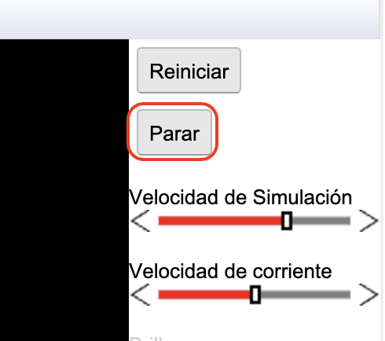
Ahora hay que empezar un proyecto nuevo para comenzar con el espacio de trabajo completamente limpio. Para ello, seleccionad el menú "Archivo" y luego la primera opción "New Blank Circuit":
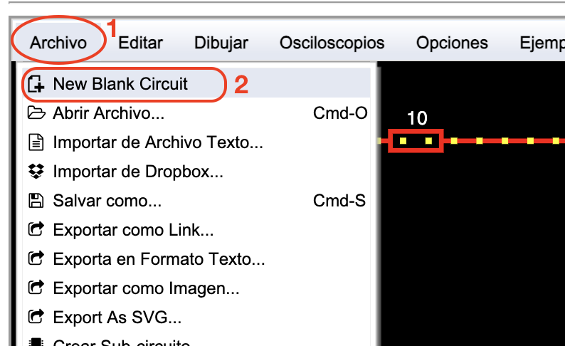
Para guardar vuestro trabajo (por si tenéis que continuar otro día) podéis usar el menú "Archivo" → "Salvar como..." y descargar un fichero que os podéis enviar por email para mantenerlo a salvo. Recordad que los ordenadores del centro pierden toda la información al apagarlos.
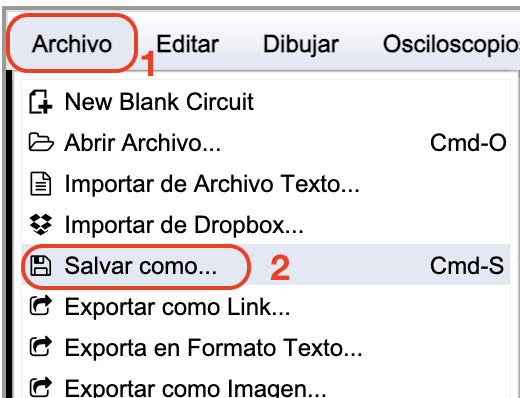
Voy a explicaros paso a paso lo que vamos a ir haciendo para que vayáis aprendiendo poco a poco a manejar el programa y. además, veáis la utilidad de cada parte del circuito.
Para realizar un circuito rectificador que haga todo lo que queremos, necesitamos diseñar varias etapas:
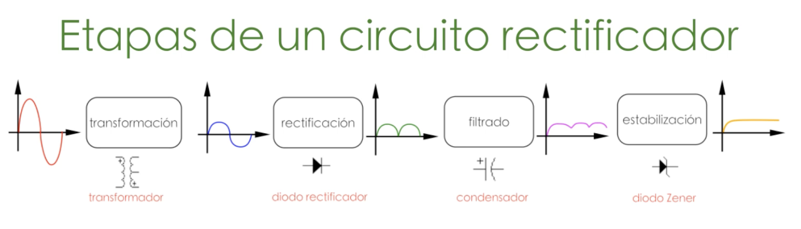
Vamos a ir diseñando el circuito etapa a etapa:
Transformación (transformador)
Lo primero que tenemos que hacer es adaptar el nivel de tensión de entrada (en este caso, 230 V), al nivel de salida que queremos obtener (en este caso, 5 V). Para modificar el voltaje utilizamos una máquina eléctrica denominada transformador.
EL transformador es una máquina que funciona en CA, por eso es lo primero que vamos a incluir en nuestro circuito. Tenemos que transformar la tensión antes de rectificar la corriente.
Un transformador utiliza el fenómeno de la inducción electromagnética para variar el voltaje de una onda de CA. Consta de dos devanados o bobinas de cable (llamados primario y secundario), que están arrollados sobre un mismo núcleo de material ferromagnético (normalmente formado por chapas de acero al silicio).
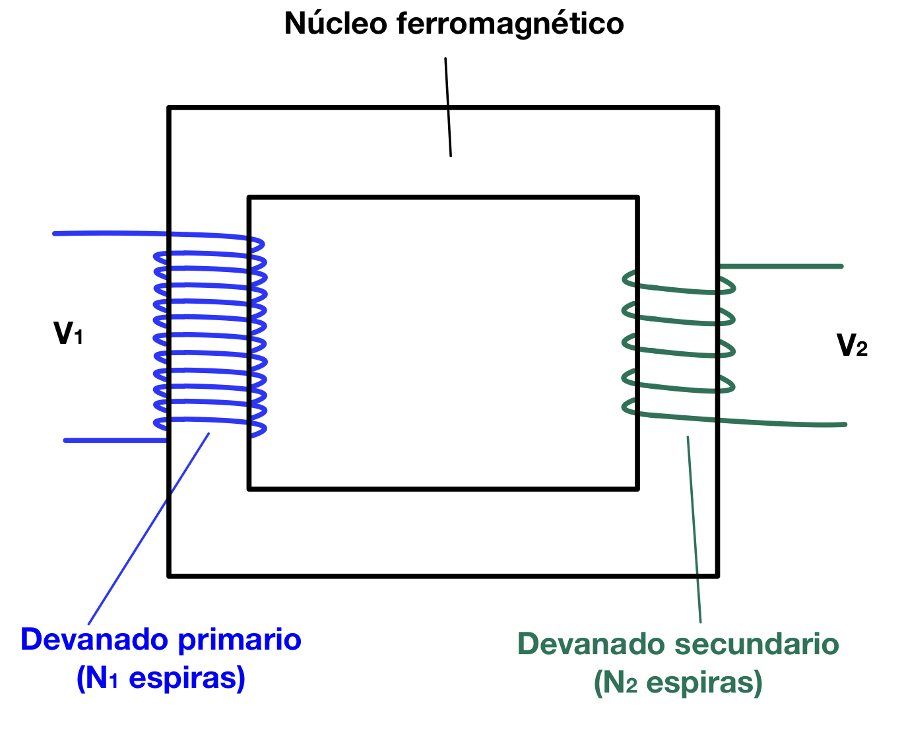
Cuando la corriente circula por el devanado primario,. aparece un flujo magnético. Este flujo magnético recorre muy fácilmente el núcleo de hierro del transformador, llegando al devanado secundario. En este último tiene lugar el efecto contrario: al atravesar el flujo magnético el interior del devanado, aparece una corriente eléctrica en el cable de la bobina secundaria.
Si controlamos el número de vueltas de cable que tienen la bobina primaria (N1) y la secundaria (N2), podemos controlar la variación de la tensión entre ambas bobinas. En concreto, en un transformador ideal se cumple que:
Donde:
- V1: tensión del primario
- V2: tensión en el secundario
- N1: número de espiras del devanado primario
- N2: número de espiras del devanado secundario
Al cociente N1/N2 se le conoce como relación de transformación del transformador. En nuestro caso, V1 valdrá 230 voltios. Podríamos pensar que la relación de transmisión de nuestro transformador debería ser 230/5 para obtener 5 voltios de salida, pero hay que tener en cuenta que, tras el transformador, tendremos un puente de diodos que introducirá una caída de tensión. Por lo tanto, tendremos que obtener algo más de 5 vloltios enb el secundario del transformador. ¿Cuánto más? Pues tú lo vas a estimar ayudándote de la simulación del circuito. La ventaja de las simulaciones es que puedes ir variando parámetros hasta obtener lo que quieras en la salida. Cuando tengas todo el circuito montado, podrás ajustar la relación de transformación necesaria.
Para empezar a trabajar en una primera aproximación, podemos considerar por ejemplo una relación de transmisión de 230/6. Te voy a enseñar cómo añadir un transformador con esta relación de transformación.
Para añadir componentes, tienes que usar el menú "Dibujar". El transformador es un componente pasivo, por lo que tienes que desplegar el submenú "Componentes Pasivos" para encontrarlo:
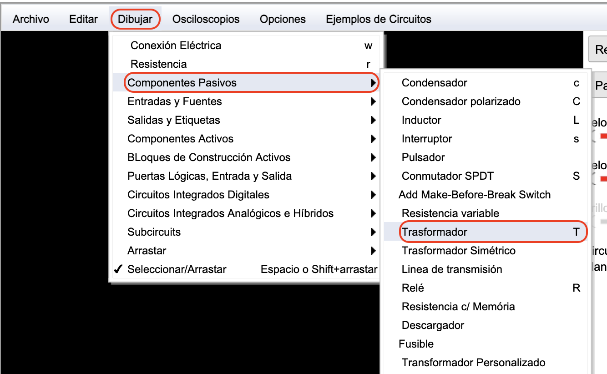
Fíjate que aparece una "T" al lado de "Transformador". Eso significa que también puedes añadir un transformador en cualquier momento pulsando la tecla "T", sin necesidad de desplegar los menús (OJO, que es la "T" mayúscula. Si pulsas la "t" minúscula, lo que añadirás a tu circuito será una etiqueta de texto, no un transformador). Las teclas abreviadas nos vendrán muy bien para añadir componentes que se repitan mucho, nos ahorrará tiempo en el diseño.
Añade el transformador a tu proyecto y colócalo en la parte izquierda:
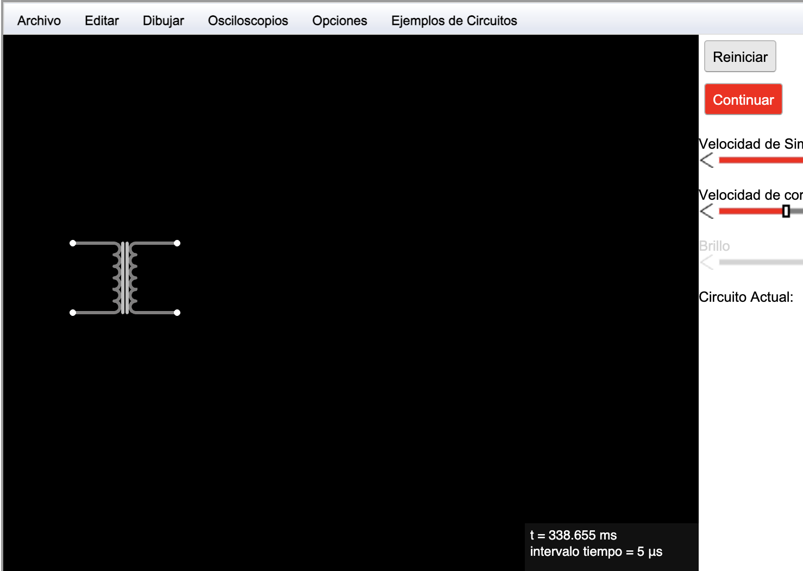
Ahora vamos a establecer la relación de transformación del transformador. Para seleccionar un dispositivo de tu circuito, tienes que presionar la tecla "Espacio", para que el cursor cambie de una cruz a una flecha. Entonces podrás hacer doble clic sobre el transformador para sacar su ventana de propiedades. La que nos interesa es la que pone "Razón (N1/N2)", que es la relación de transformación. Como hemos pensado poner 230/6 para empezar, podremos 38 para redondear (230/6 = 38,333). Pulsa OK cuando hayas terminado para que se guarde:
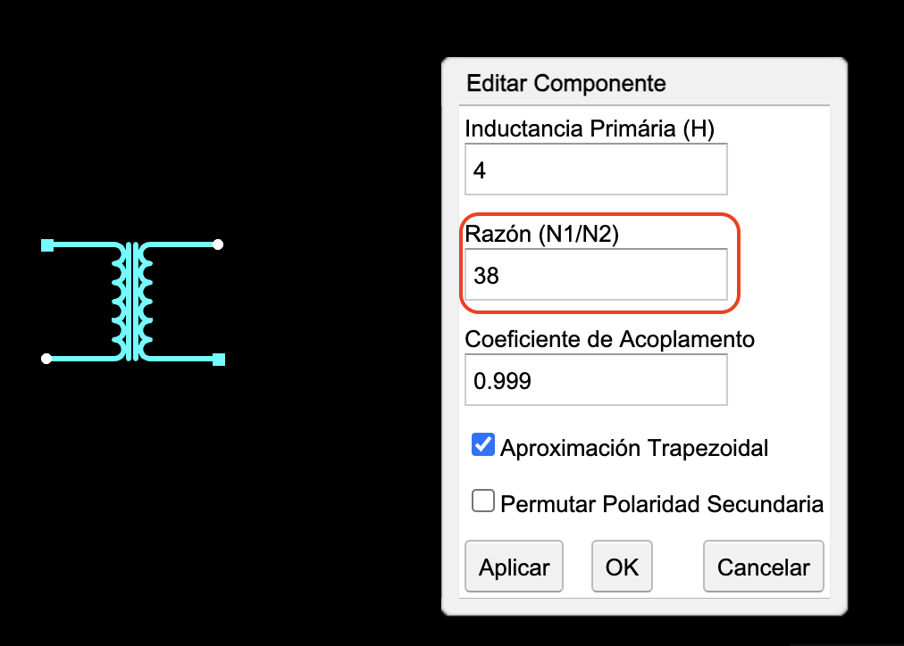
Para finalizar con esta etapa del circuito y poder probarlo, vamos a añadir una fuente de alimentación de CA de 230 V y 50 Hz al primario del transformador. Las fuentes de alimentación las puedes encontrar en el menú "Dibujar" → "Entradas y Fuentes". En este caso queremos una fuente de CA de dos terminales.
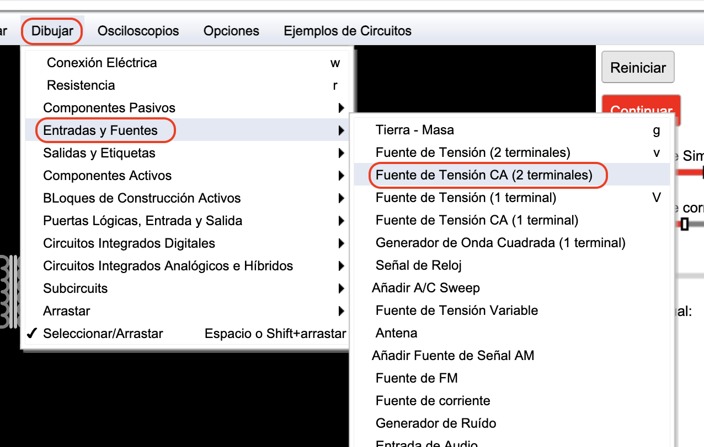
Cuando la dibujes en tu proyecto, debes luego conectarla al transformador. Para ello, acuérdate de pulsar la tecla espacio una vez dibujada la fuente para pasar al modo selección y poder arrastrarla por tu esquema. También puedes arrastrar uno de sus terminales para ajustarlo y conectarlo con el correspondiente del transformador. Aquí te dejo un ejemplo de cómo colocar la fuente:
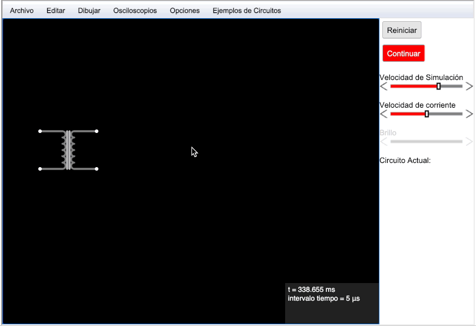
Una vez colocada, hay que darle los valores correctos. En este caso un voltaje de 230 voltios y una frecuencia de 50 Hz. Doble clic sobre la fuente para sacar su ventana de propiedades y cambias estas:
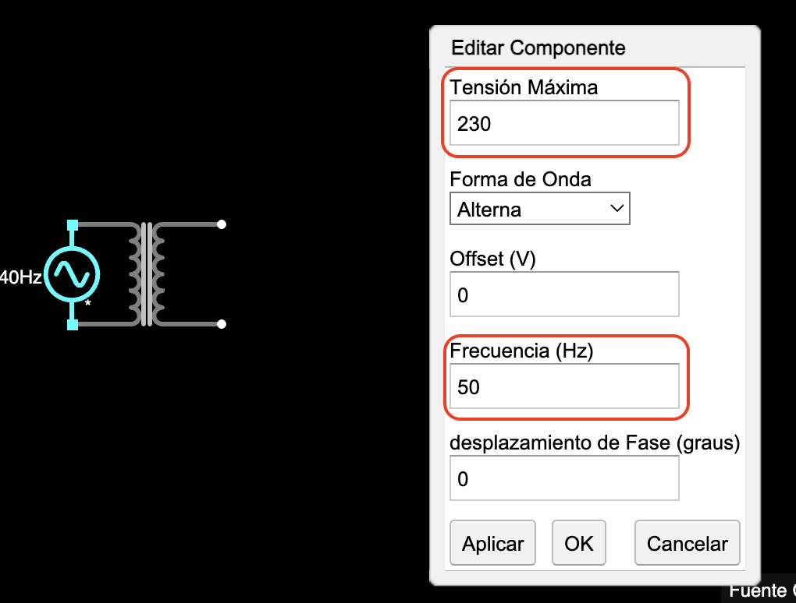
Rectificación (diodo rectificador)
Una vez reducido el nivel de tensión a aproximadamente 6 voltios, llega el momento de pasar de CA a CC. Para eso vamos a utilizar un puente de diodos para hacer un rectificador de onda completa como ya hemos visto.
Para añadir un diodo tenemos que ir en esta ocasión al submenú de "Componentes Activos" (o pulsar la tecla "d" minúscula):
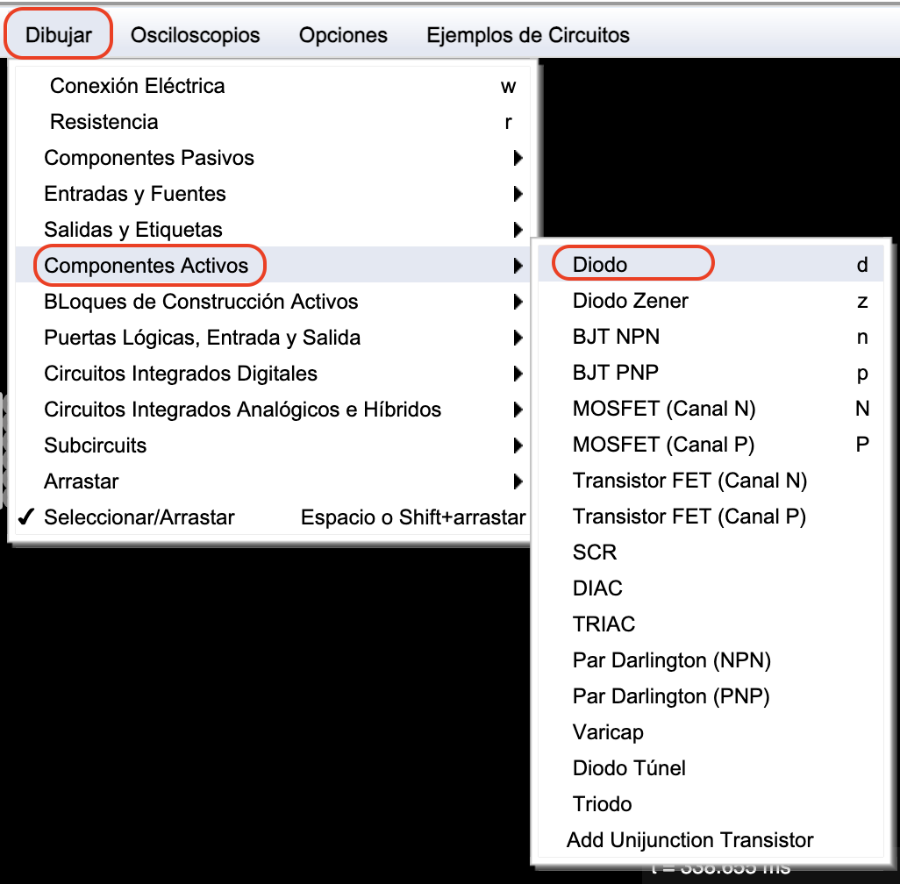
Tendrás que añadir 4 diodos y conectarlos en forma de puente. Una vez los tengas conectados, puedes seleccionarlos todos dibujando un rectángulo con el ratón y moverlos a la vez para recolocarlos donde necesites. Te dejo una animación para que veas cómo hacerlo (recuerda pulsar el espacio cuando tengas los cuatro diodos dibujados, para pasar al modo selección y poder moverlos y recolocarlos a tu gusto).
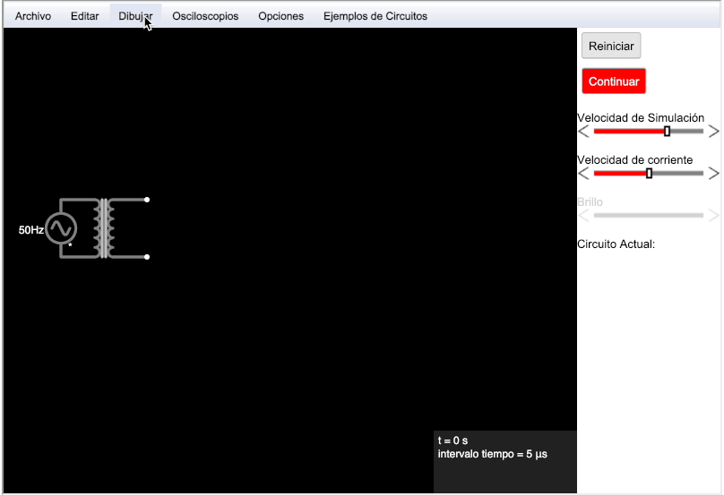
Una vez dibujado el puente, conéctalo al secundario del transformador. La conexión del transformador hay que hacerla con los vértices superior e inferior del puente, para lo que necesitarás dibujar cables de conexión. Los cables están en el menú "Dibujar" → "Conexión Eléctrica" (o tecla "w") y solo tienes que pulsar el ratón y arrastrar para dibujarlos. Como es la primera vez que vas a dibujar los cables, te dejo también una animación para que veas cómo hacerlo. Te debería quedar algo así:
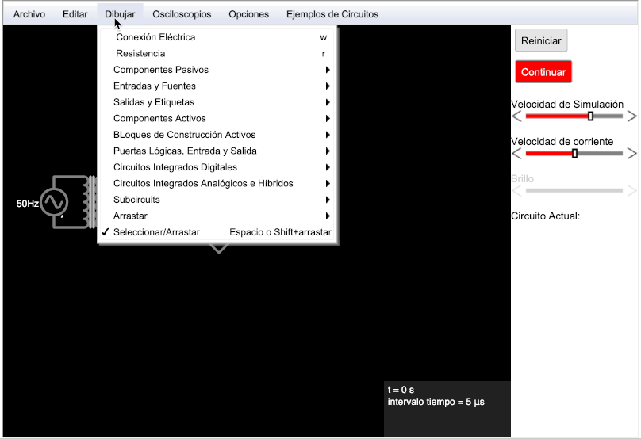
Filtrado (condensador)
Con el circuito actual obtendríamos una salida de CA pero todavía habría puntos en los que la tensión caería hasta 0 voltios. Como hemos visto también, pondremos ahora un condensador para mantener la tensión y no dejar que caiga tanto. Para este ejemplo, vamos a utilizar un condensador electrolítico (por tanto, polarizado) de 47 μF, que es bastante común en electrónica.
Puedes encontrar los condensadores de nuevo entre los "Elementos Pasivos". Selecciona el condensador polarizado (también puedes usar la letra "C" mayúscula) y añádelo a tu circuito:
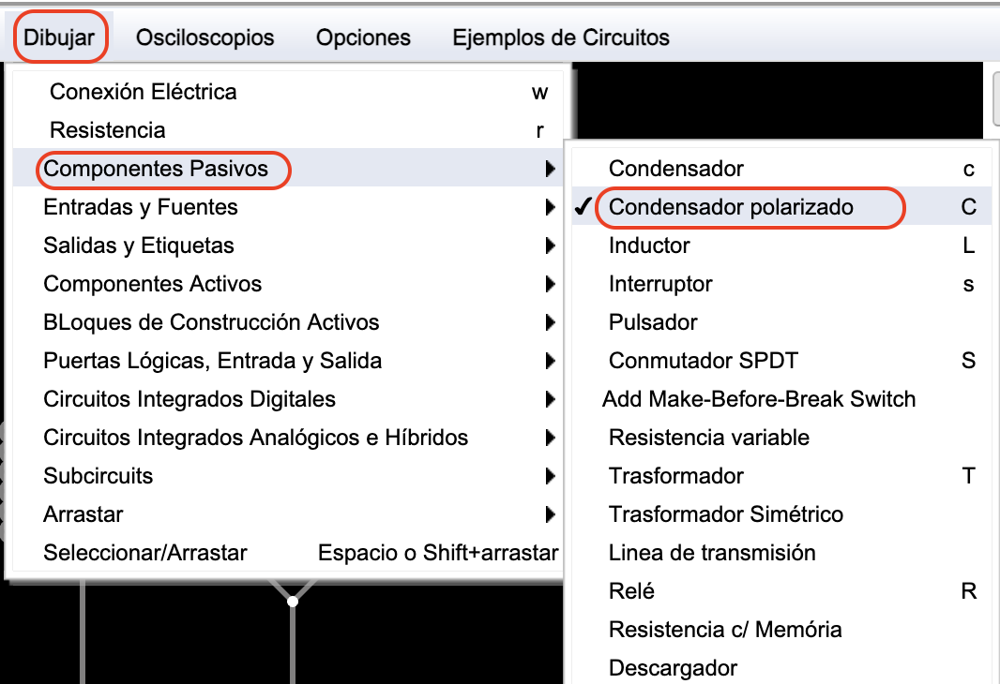
Pasa a modo selección (pulsando la barra espaciadora) y haz doble clic sobre el condensador para modificar su capacidad a 47 μF. El prefijo micro (μ) se escribe como una letra "u" minúscula. Lo demás, déjalo tal y como está:
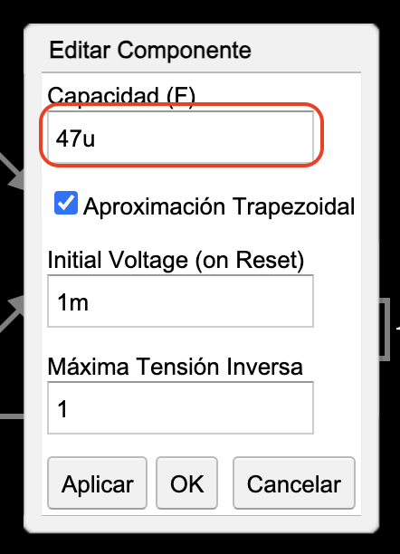
Conecta el condensador a la salida del puente de diodos, con el positivo hacia arriba conectado al vértice derecho del puente y el negativo hacia abajo, conectado al vértice izquierdo. Te debería quedar algo así:
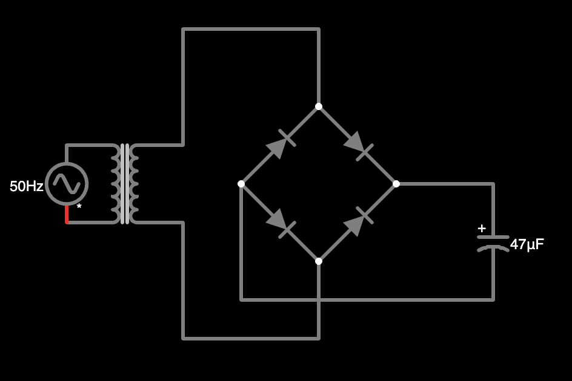
En este punto, vamos a probar cómo funcionaría nuestro circuito. Vamos a añadir una carga en forma de resistencia a la salida del condensador y vamos a ver cómo variaría el voltaje en esa carga.
Para eso, añadimos primero una resistencia eléctrica al circuito. Es un componente tan común que no es necesario abrir el submenú de los componentes pasivos para encontrarla. La han puesto directamente en el primer nivel:
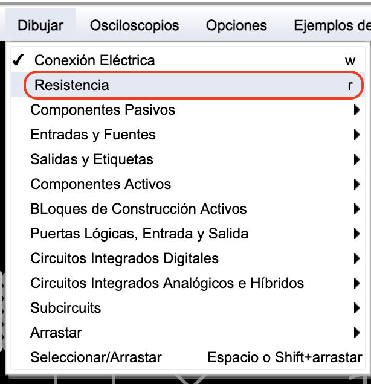
Colocamos la resistencia en paralelo con el condensador y la conectamos con cables (Conexión eléctrica - w):
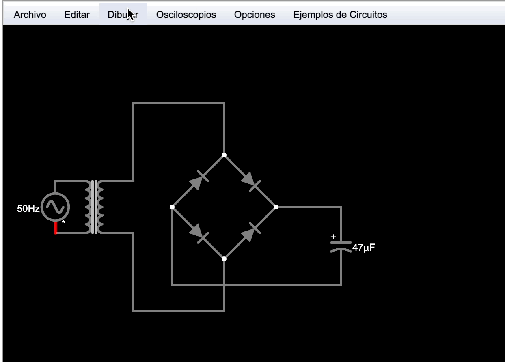
Para visualizar la tensión y la corriente en la carga, vamos a añadir una vista de osciloscopio a esa resistencia que acabamos de añadir. Las vistas de osciloscopio se pueden añadir haciendo clic derecho en el componente que sea (en este caso, la resistencia) y seleccionando la opción "View in New Scope" del menú que aparece:
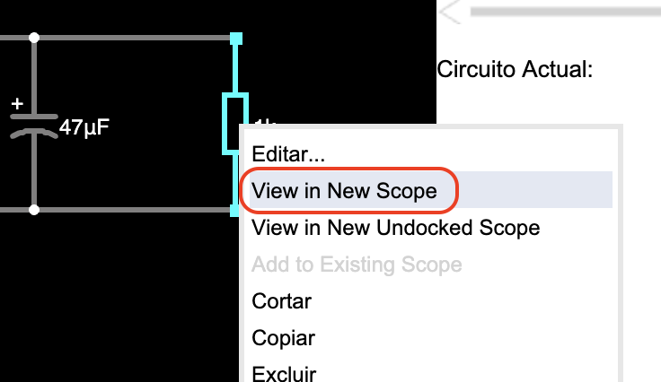
Aparecerá una gráfica de osciloscopio en la parte inferior de la pantalla de diseño, donde veremos las curvas de voltaje e intensidad de corriente frente al tiempo en la resistencia.
Ha llegado el momento de simular el circuito. Para empezar la simulación, solo hay que hacer clic en el botón "Continuar", a la derecha de la pantalla de diseño:
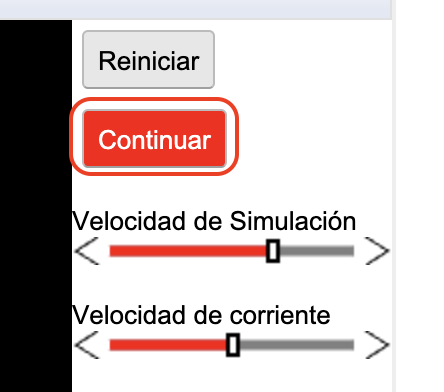
Si habéis seguido correctamente las instrucciones, el osciloscopio de la resistencia tendrá que mostrar esto:
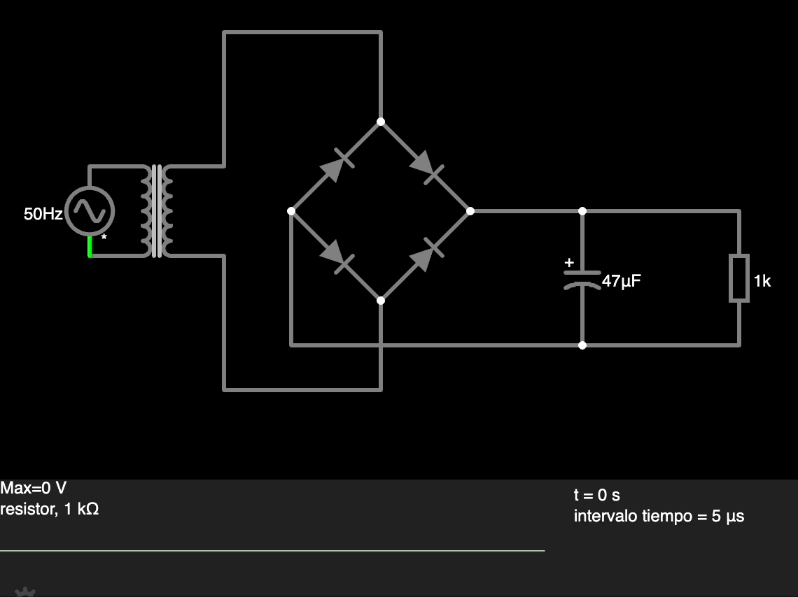
La curva verde corresponde al voltaje y la amarilla a la intensidad de corriente en la resistencia de carga. Aunque el resultado es prometedor, podemos ver que, aunque el voltaje se mantiene siempre positivo, no es perfectamente estable y aparece un rizado importante en la onda.
Para solucionar este problema, añadiremos un último elemento para estabilizar la tensión: un diodo zener.
Estabilización (diodo Zener)
En esta última etapa hay que añadir un diodo zener a nuestro circuito para eliminar del todo el rizado. Hay que añadir, además del zener, una resistencia que soporte el resto de la tensión que está estabilizando el zener. Pondremos en este caso una resistencia de 100 ohmios.
Aquí os dejo una animación de cómo añadir estos elementos al circuito:
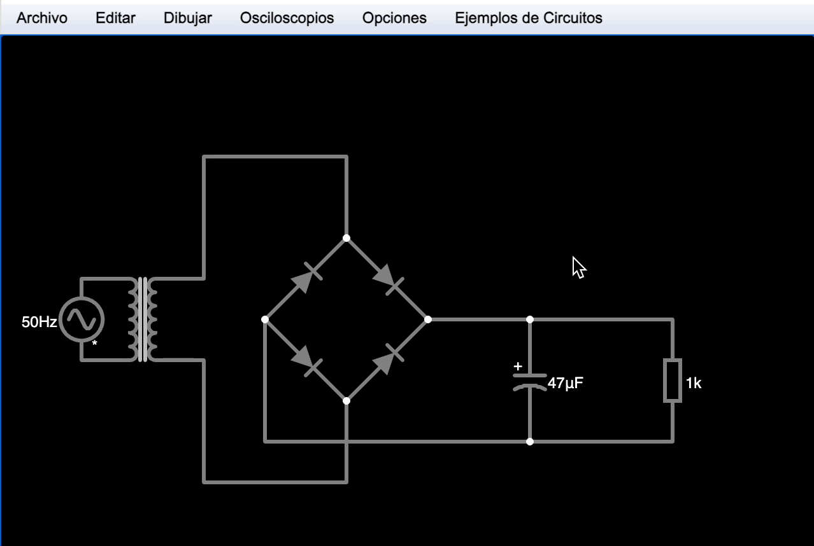
Para que nuestra fuente estabilice a 5 voltios, tenemos que utilizar un zener que tenga esa tensión de ruptura. El diodo zener que aparece por defecto tiene una tensión de ruptura algo superior (5,6 voltios), pero podemos cambiarla sin problema editando el componente con doble clic. Aquí tenéis cómo hacerlo:
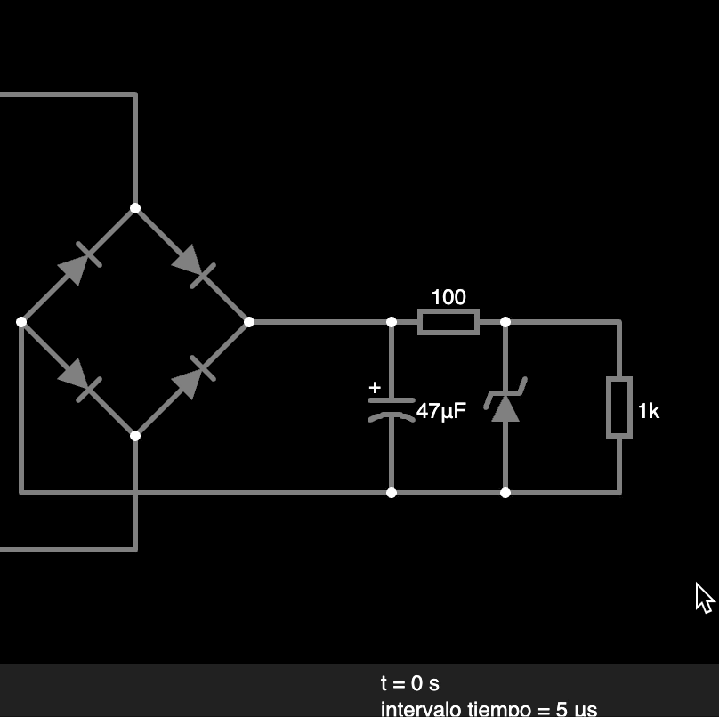
Si simuláis ahora el circuito, veréis que aún no hemos solucionado el problema:
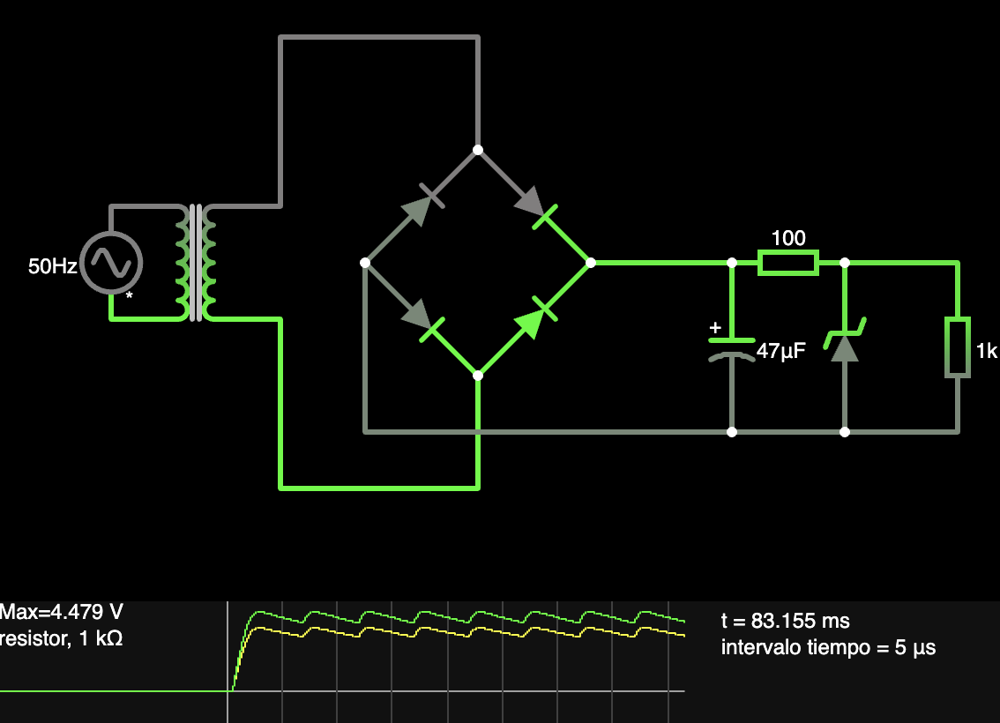
El rizado sigue ahí, ¿por qué?. Si os fijáis bien, el voltaje en la resistencia de carga ahora es aún menor que antes (en concreto, es de 4,479 V), por lo que el zener no entra en su zona de ruptura. Tenemos que asegurarnos de que le lleguen más de 5 voltios al zener para entre en la zona de ruptura y estabilice la tensión. Este es el momento en el que tenéis que reducir la relación de transformación del transformador hasta que tengáis un valor que haga funcionar al zener y produzca la estabilización de la corriente continua. Probad valores hasta que consigáis un resultado parecido a esto:
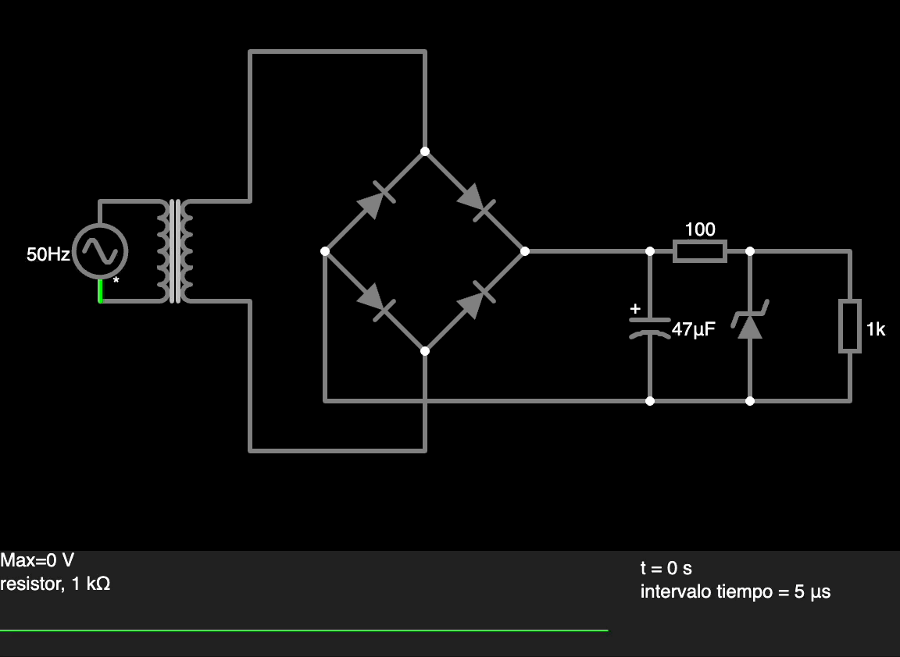
Como veis, hemos conseguido un circuito que transforma corriente alterna de 230 V y 50 Hz en corriente continua de 5,04 V prácticamente constante. El diseño del circuito ya está terminado y solo hay que compartirlo en la tarea de Moodle.
Entrega de la tarea
Para entregar la tarea tendréis que compartir el modelo simulado de dos formas distintas:
- Fichero de texto: guardar el fichero con "Archivo" → "Salvar como..." poniéndole el nombre "TAREA 4 - NOMBRE Y APELLIDOS.circuitjs.txt" y añadirlo a la tarea de Moodle
- Enlace directo al modelo: utilizar la opción del menú "Archivo" → "Exportar como Link..." y copiar el enlace y pegarlo en la tarea de Moodle.